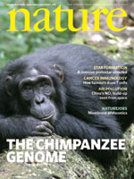

O TRIBUNAL: Sr. Walczak, você pode continuar.
SENHOR WALCZAK: Obrigado, Vossa Excelência.
Q. Dr. Miller, quero mudar de assunto. Acabamos de falar sobre a ciência e a natureza da ciência, e agora quero passar para o tópico da evolução. O que é evolução?
A. Você sempre faz boas perguntas.
P. Obrigado.
A. A maioria dos biólogos descreveria a evolução como um processo de mudança ao longo do tempo que caracteriza a história natural da vida neste planeta.
Q. E existem certas proposições centrais à teoria da evolução?
A. Sim, acho que existem, e acho que basicamente existem três. E a primeira é a observação de que a vida realmente mudou ao longo do tempo, de que a vida do passado é diferente ou foi diferente da vida do presente, e de que a história natural deste planeta é caracterizada por um processo de mudança ao longo do tempo.
A segunda coisa, o segundo elemento central, eu acho, é o princípio da descendência comum, e é a noção de que os seres vivos são unidos por um núcleo de ancestralidade comum, de que os seres vivos, se os rastrear de volta o suficiente, mostram ancestrais comuns que deram origem às muitas formas de vida de hoje.
E a terceira proposição central e, penso eu, provavelmente a maneira mais simples de expressá-la é que o processo que impulsionou essa mudança ao longo do tempo, a partir de ancestrais comuns e descendência comum, é dirigido por forças, princípios e ações que são observáveis no mundo de hoje. E, portanto, a chave é que podemos entender como a evolução funciona observando o que está acontecendo ao nosso redor no mundo de hoje.
Q. E há um nome para essa força que impulsiona a mudança?
A. A força que impulsiona a mudança, na verdade, são muitas forças e processos individuais. Muitos deles estão unidos sob o termo "seleção natural."
Q. Agora, há um senhor chamado Charles Darwin que desempenhou algum papel aqui. Eu estava me perguntando, quem foi Charles Darwin?
A. Charles Darwin foi um naturalista britânico que nasceu em 12 de fevereiro de 1809. Se a memória não me engana, esse é um dia melhor que a média para a história da humanidade, pois Abraham Lincoln nasceu exatamente no mesmo dia.
Ele viveu na Grã-Bretanha, estudou história natural e teologia, tornou-se naturalista, viajou pelo mundo em um navio britânico chamado Beagle, fez uma série de observações muito interessantes durante aquela viagem e, ao retornar, passou muitos anos pensando, escrevendo e criticando suas ideias, e depois escreveu uma série de livros que são a base do que consideramos ser a teoria evolutiva moderna.
Q. E qual foi a contribuição de Darwin para a evolução?
A. Bem, um dos -- acho que o aspecto mais interessante e muitas vezes negligenciado é que a primeira proposição central da evolução, que é que a vida mudou ao longo do tempo, foi na verdade apreciada muito antes de Darwin nascer.
O grande naturalista francês Cuvier reconheceu que os fósseis contavam um registro da vida no passado e que esse registro era um registro de mudança, e que, à medida que a vida se transformava no presente, novos organismos apareciam e organismos antigos se extinguiam. Assim, o processo de mudança, o que hoje chamamos simplesmente de processo de evolução, foi bem compreendido antes de Darwin.
O que Darwin fez pela primeira vez foi propor um mecanismo plausível, viável e, em última análise, testável para os processos que impulsionaram essa mudança, e esse é o mecanismo da seleção natural.
Q. E a teoria evolutiva ficou parada desde os tempos de Darwin ou evoluiu?
A. Tem — nada na ciência fica parado, e isso é verdadeiro para a teoria evolutiva também. Charles Darwin viveu, trabalhou e escreveu em uma época em que, na maior parte, os cientistas estavam inconscientes da existência de genes, de macromoléculas, certamente do DNA, e de uma série de outras ferramentas e técnicas pelas quais estudamos a biologia hoje.
E para mim, como cientista, a coisa mais notável sobre a teoria evolutiva é que, à medida que a ciência da bioquímica se desenvolveu, assim como as ciências da biologia celular, genética, biologia molecular e outros elementos da ciência evoluíram, todas essas áreas encaixaram-se perfeitamente no quadro geral descrito por Darwin há quase 150 anos.
Q. Então a teoria evolutiva se baseia em muitas ramificações da ciência?
A. Sim, faz.
Q. Como o surgimento da genética moderna e da biologia molecular afetou as visões dos cientistas sobre a evolução?
A. Bem, a genética é realmente a primeira e, penso eu, a mais interessante em alguns aspectos históricos. Charles Darwin, perto do fim de sua vida, estava preocupado com algo, e o que ele estava preocupado era que características favoráveis que pudessem aparecer nos organismos pudessem ser diluídas à medida que eles precisavam se acasalar para se reproduzir.
Portanto, se um indivíduo aparecesse com uma característica muito boa que pudesse ser favorecida pela seleção natural, sua prole poderia ter apenas metade dessa característica, porque Darwin pensava que a herança dos organismos se misturava em seus descendentes, e na geração seguinte seria um quarto e na geração seguinte um oitavo, e após algum tempo, não importa quão favorável fosse a variação, ela desapareceria.
Bem, a descoberta da genética, começando com Gregor Mendel na década de 1850, respondeu repentinamente à preocupação mais profunda de Darwin porque mostrou que a genética, a herança, é particulada. E o que quero dizer com esse tipo de termo jargão na ciência é que nossa herança é controlada por unidades individuais chamadas genes, que são transmitidas de uma geração para a seguinte.
E isso resolveu o problema de Darwin porque mostrou que a herança não é realmente uma mistura e que essas características favoráveis podem, de fato, ser preservadas. Portanto, a genética moderna, basicamente, poderíamos dizer, veio ao resgate de um problema potencial na teoria evolutiva.
As coisas melhoraram quando a biologia molecular adicionou a dimensão do DNA e do RNA, porque, pela primeira vez, pudemos entender como a evolução poderia funcionar até o nível da molécula. E, em todos os aspectos, ela forneceu uma confirmação dramática para esse quadro geral.
Q. Acho que talvez devamos dar um passo atrás e talvez eu possa pedir que você explique todo o conceito de seleção natural. Sobre o que estamos falando aqui?
A. Bem, Darwin e outras pessoas ficaram impressionados com o quanto criadores de plantas e animais puderam influenciar as características finais selecionando indivíduos de uma população reprodutiva, digamos, de cavalos ou coelhos que possuíam uma característica específica que o criador desejava e permitindo que eles se reproduzissem. Criadores de plantas fazem a mesma coisa há anos. Essa foi a metodologia de Luther Burbank quando ele desenvolveu todo tipo de linhagens benéficas de plantas.
E Darwin foi naturalista o suficiente para perceber que o mesmo processo de seleção realmente ocorre na natureza. Darwin apontou que há uma luta pela existência, quer gostemos de admitir ou não, e nem todos os organismos são capazes de transmitir seus genes para a geração seguinte. Aqueles que se saem melhor nessa luta pela existência — e não se trata apenas de uma luta para sobreviver, mas também para encontrar parceiros, reproduzir-se e criar a prole. Portanto, em muitos aspectos, coisas que são muito cooperativas são importantes nessa luta.
Darwin percebeu que aqueles organismos que possuíam as características que melhor os adaptavam a essa luta, eram aqueles que deixariam suas características para a geração seguinte, e ele percebeu que isso é praticamente o que criadores de plantas e animais fazem, e, portanto, ao longo do tempo, as características médias de uma população poderiam mudar em uma direção ou outra e poderiam mudar bastante dramaticamente. E essa é a ideia essencial da seleção natural.
Q. E o que Darwin não compreendia era exatamente como isso acontecia, porque ele não tinha — ele não tinha o benefício da genética na época?
A. Todo o processo depende cientificamente de qual é esse mecanismo de herança. Darwin não sabia. Não poderia ter sabido. Ninguém sabia na época. E, portanto, você poderia dizer que quando a genética moderna surgiu com a redescoberta do trabalho de Gregor Mendel, tudo na teoria de Darwin estava em risco, poderia ter sido derrubado se a genética se mostrasse contraditória aos elementos essenciais da teoria da evolução, mas não os contradisse, confirmou-os em grande detalhe.
Q. Agora, você é capaz de nos dar alguns exemplos de como a genética moderna foi aplicada à teoria evolutiva?
A. Bem, posso dar-lhe vários exemplos. Gostaria que eu usasse uma demonstração que seria útil para o Tribunal?
Q. E você, a meu pedido, preparou uma série de diapositivos que o ajudarão a explicar isso?
A. Sim, eu já, de fato. Eu pensei que começaria ilustrando isso olhando para a hemoglobina. A hemoglobina é a proteína que torna o seu sangue vermelho. É a proteína transportadora de oxigênio encontrada nos glóbulos vermelhos.
E no canto superior direito do slide, há um diagrama molecular da hemoglobina. É composta por quatro partes. Essas partes são chamadas de polipeptídeos, mas podemos pensar nelas essencialmente como quatro subunidades. Possui duas cópias de uma parte chamada alfa-globina e duas cópias de uma parte chamada beta-globina.
Agora, o que a biologia molecular moderna nos permitiu fazer é olhar exatamente onde estão as instruções que especificam isso. E você notará que as instruções para a globina alfa — desculpe, as instruções para a globina alfa — são especificadas no Cromossomo Número 16 e as instruções para a globina beta são especificadas no Cromossomo Número 11.
E assim como nosso genoma faz para muitos genes, temos cópias múltiplas desses, então temos backups. Temos cópias extras dos genes da alfa-globina e cópias extras dos genes da beta-globina, e eles têm funções fisiológicas muito interessantes, essas cópias múltiplas, que não são relevantes agora e, portanto, não vamos entrar nelas.
Mas há algo muito interessante sobre esses, e isso nos permite testar a evolução até o nível da molécula. E eu quero destacar isso observando os genes beta-globina no Cromossomo Número 11.
Se você puder avançar o slide, por favor. Já localizei as seis cópias da sequência do gene beta-globina. Cada uma dessas cópias é um conjunto de instruções para como você constrói este polipeptídeo. Cinco delas funcionam, mas uma delas não funciona. Foi designada com as letras gregas psi, beta e, em seguida, o número um. E a sequência psi-beta-1 não é um gene. Ela não funciona. É um pseudogene, e um pseudogene é reconhecido como um gene porque é tão similar aos outros cinco em sua sequência de DNA, mas tem alguns erros. Está quebrada e possui uma série de erros moleculares que tornam o gene não funcional.
Agora, gostaria de mostrar exatamente quais são esses erros moleculares no próximo slide. Esta é uma ampliação do pseudogene. São as porções que realmente realizam a codificação, se fosse codificada em vermelho aqui. E você notará que existem seis erros distintos neste gene.
Agora, não sei se realmente quero tentar a paciência do Tribunal ao entrar nos detalhes da biologia molecular, mas de uma forma muito simples, o iniciador alterado significa que o sinal que existe na frente do gene, que diz "copie-me", está ausente. E, portanto, os pré-RNAs, a molécula que copia os genes, não conseguem se ligar, e nunca são expressos.
Mas mesmo que fosse expresso, ele possui cinco outros erros que impediriam esta, a cópia de RNA deste gene, de ser traduzida. Ele está faltando o sinal de início. Ele possui códons de parada que fariam com que o aparato sintético parasse completamente. É apenas um desastre.
Agora, a razão pela qual isso é importante na evolução é, na verdade, muito simples, e é que esses erros aparecem em um gene, eles não têm propósito funcional. E você pode perguntar a si mesmo, o que eu faria, o que você faria se encontrássemos outro organismo que não tivesse apenas genes semelhantes, mas também tivesse um pseudogene no mesmo local e tivesse o mesmo conjunto de erros?
Outros Links:
|
Não há razão pela qual a evolução produziria um conjunto duplicado de erros em duas cópias de coisas. Isso deve significar que esses dois organismos descendem com modificações de outro organismo que possuía o mesmo conjunto de erros.
E se você avançar para o próximo slide, o que gostaria de mostrar são três organismos, o gorila, o chimpanzé e o ser humano, que compartilham exatamente o mesmo conjunto de erros moleculares.
Agora, por que isso é significativo? Um dos princípios centrais da evolução é a descendência comum. Poder-se-ia sempre argumentar que, como as três espécies que representei neste slide são todas espécies africanas, é de lá que todas elas vêm, são todas primatas e provavelmente começaram a viver em ambientes semelhantes, que as partes funcionais deste locus gênico podem funcionar da mesma maneira. Mas você não pode argumentar que os erros devem coincidir.
E o fato de que todas as três dessas espécies possuem erros correspondentes nos leva a apenas uma conclusão, e essa é a mesma conclusão que Charles Darwin previu quase um século e meio atrás, e é que essas três espécies compartilham um ancestral comum. Erros correspondentes são evidências de ancestralidade comum.
Q. E existem outros animais que cometem os mesmos erros?
A. Bem, na verdade não sabemos, porque há dois grandes símios em que estamos aguardando a sequência do genoma. São o orangotango e o bonobo, chimpanzé pigmeu. E se eu tivesse que fazer uma aposta amigável, apostaria que eles têm.
Mas outros primatas e outros mamíferos, gatos, cães, cavalos, não têm esses erros. Esses erros são únicos à linhagem que mostra a descendência comum entre nós e esses outros organismos.
Q. Poderia nos dar outro exemplo?
A. Claro, estou muito feliz em ajudar. O próximo slide é mais um teste da hipótese evolutiva de descendência comum.
Como tenho certeza que a maioria das pessoas sabe, temos 46 cromossomos nas nossas células humanas. Isso significa que temos 23 pares de cromossomos, pois recebemos 23 da mãe e 23 do pai, então todos nós temos 46 no total. Temos 23 pares.
Outros Links:
|
Agora, a coisa curiosa sobre os grandes símios é que eles têm mais. Eles têm, como você pode ver no slide, 48 cromossomos, o que significa que eles têm 24 pares. Agora, o que isso significa, Sr. Walczak, é que você e eu, de certa forma, estamos faltando um cromossomo, estamos faltando um par de cromossomos. E a pergunta é: se a evolução está certa sobre essa ideia de ancestralidade comum, para onde foi o cromossomo?
Agora, não há possibilidade de que essa ancestralidade comum, que teria tido 48 cromossomos porque as outras três espécies têm 48, tenha perdido ou descartado o cromossomo. O cromossomo carrega tanta informação genética que a perda de um cromossomo inteiro provavelmente seria fatal. Portanto, isso não é uma hipótese.
Portanto, a evolução faz uma previsão testável, e essa é a de que, em algum lugar do genoma humano, devemos ser capazes de encontrar um cromossomo humano que realmente mostre o ponto em que dois desses ancestrais comuns foram colados juntos. Devemos ser capazes de encontrar um pedaço de fita adesiva Scotch mantendo unidos dois cromossomos, de modo que nossos 24 pares — um deles foi colado para formar apenas 23. E se não conseguirmos encontrar isso, então a hipótese de ancestralidade comum está errada e a evolução está equivocada.
Vá para o próximo slide. Agora, a previsão é ainda melhor do que isso. E a razão para isso é que os próprios cromossomos possuem pequenos marcadores genéticos no meio deles e nas suas extremidades. Eles possuem sequências de DNA, que destaquei aqui, chamadas de telômeros, que existem nas bordas dos cromossomos.
Em seguida, eles possuem sequências de DNA especiais no centro, chamadas centrômeros, que destaquei em vermelho. Os centrômeros são realmente importantes porque é onde os cromossomos são separados quando uma célula se divide. Se você não tiver um centrômero, está em grandes problemas.
Agora, se um dos nossos cromossomos, como a evolução prevê, foi realmente formado pela fusão de dois cromossomos, o que deveríamos encontrar nesse cromossomo humano são as sequências de telômeros que pertencem às extremidades, mas deveríamos encontrá-las no meio. Algo como a costura na qual você colou duas coisas juntas; ela ainda deveria estar lá.
E também deveríamos encontrar que há dois centrômeros, um dos quais, talvez, tenha sido inativado para tornar conveniente separá-lo quando uma célula se divide. Essa é uma previsão. E se não conseguirmos encontrá-lo em nosso genoma, então a evolução está em problemas.
Próximo slide. Bem, eis aí, a resposta está no Número do Cromossomo 2. Este é um artigo que -- esta é uma cópia fidel de um artigo publicado na revista britânica Nature em 2004. É um artigo de múltiplos autores. O primeiro autor é Hillier, e outros autores são listados como et al. E o título é, A Geração e Anotação das Sequências de DNA dos Cromossomos Humanos 2 e 4.
E o que este artigo mostra muito claramente é que todos os sinais da fusão desses cromossomos previstos pela descendência comum e pela evolução, todos esses sinais estão presentes no Cromossomo Número 2 humano.
Você poderia avançar o slide. E eu coloquei isso aqui para lembrar à Corte qual é essa previsão. Devemos encontrar telômeros no ponto de fusão de um dos nossos cromossomos, devemos ter um centrômero inativado e devemos ter outro que ainda funciona.
E você notará — este é algum jargão científico do artigo, mas vou ler parte dele. Citação: O cromossomo 2 é único na linhagem evolutiva humana, tendo surgido como resultado da fusão cabeça-a-cabeça de dois cromossomos acrocêntricos que permanecem separados em outros primatas. O local exato da fusão foi localizado, o artigo diz exatamente ali, onde nossa análise confirmou a presença de múltiplos telômeros e duplicações subteloméricas. Então, eles estão bem ali.
E, em segundo lugar, durante a formação do cromossomo 2 humano, um dos dois centrômeros tornou-se inativado, e o ponto exato dessa inativação é apontado, e o cromossomo que é inativado em nós — desculpe-me, o centrômero que é inativado em nós — resulta em corresponder ao Cromossomo Número 13 dos primatas.
Assim, o caso está encerrado de uma maneira muito bela, e é que a previsão da evolução da descendência comum é confirmada por essa evidência do tubo de chumbo que vocês veem aqui, em termos de ligar tudo junto, de que nosso cromossomo formado pela fusão a partir de nosso ancestral comum é o Cromossomo Número 2. A evolução fez uma previsão testável e ela foi aprovada.
Q. Então, o que você está testemunhando aqui é que a genética moderna e a biologia molecular realmente apoiam a teoria evolutiva?
A. Eles o sustentam em grande detalhe. E quanto mais perto conseguirmos chegar ao exame dos detalhes do genoma humano, mais poderosa a evidência se tornou.
Q. Gostaria que você dirigisse a atenção para Exposição 127 dos Requerentes. Você reconhece este documento?
A. Sim, já vi isso antes. Acredito que seja uma newsletter produzida pelo Distrito Escolar da Área de Dover.
Q. E, Matt, se você puder destacar. Eu destaquei um trecho da segunda página do boletim informativo, e gostaria que você lesse o que foi destacado.
A. Claro. Citação: Em termos simples, em nível molecular, os cientistas descobriram uma disposição intencional de partes que não pode ser explicada pela teoria de Darwin. De fato, desde a década de 1950, os avanços na biologia molecular e na química nos mostraram que as células vivas, as unidades fundamentais dos processos da vida, não podem ser explicadas pelo acaso.
Q. Essa é uma afirmação verdadeira?
A. Eu acho que nenhuma dessas duas frases é uma afirmação verdadeira. Você gostaria que eu explicasse o porquê?
P. Por favor.
A. Ok. O primeiro ponto é a disposição intencional das partes. A ciência não lida realmente com questões de propósito, valor e significado. Portanto, afirmar que a ciência descobriu uma disposição intencional das partes coloca a ciência do outro lado dessa divisão do conhecimento empírico, onde ela não pertence, o que certamente não é verdade.
Como acabei de mencionar a vocês, a organização dos cromossomos em nosso genoma, a existência de erros moleculares, se encaixa na teoria evolutiva de forma notável, de modo que essa parte da frase também não se sustenta.
E então a segunda frase, para qualquer cientista que seja extremamente curioso, diz: "As unidades fundamentais dos processos da vida não podem ser explicadas pelo acaso". Eu concordo completamente. A seleção natural não é um processo aleatório. A evolução não é apenas sorte aleatória. E a seleção natural é a parte menos sujeita ao acaso da teoria evolutiva. Portanto, afirmar que não se pode explicar algo pelo acaso não é equivalente a dizer que não se pode explicá-lo pela evolução.
Q. Agora, há pesquisas em andamento nessa área, biologia molecular e genética?
A. Sim, absolutamente. Na verdade, está se movendo tão rápido que é difícil acompanhar.
Q. E, de fato, existe uma publicação muito recente, revisada por pares, que se refere a esta questão da descendência comum?
A. Bem, a resposta para isso é que há mais de uma. E a que vem à minha mente imediatamente é uma questão de início deste mês na revista científica Nature, que pode ser a revista científica mais prestigiada do mundo, que se concentrou em sete ou oito artigos descrevendo a análise do genoma completo do genoma do chimpanzé.
Q. E se eu puder chamar sua atenção para o que foi marcado como Exibição 643 das partes autoras, é esta a capa da publicação à qual você se refere?
 |
A. Sim, essa é a capa da edição de 1º de setembro de 2005 da revista científica Nature. E você pode ver que a história de capa é o genoma do chimpanzé.
Q. Matt, se você pudesse vir para -- eu acredito que é a Página 69. É este o artigo ao qual você está se referindo?
A. Bem, é uma das cerca de sete ou oito artigos sobre o genoma e suas implicações aos quais me refiro. Mas este é o artigo principal que apresenta a sequência do chimpanzé e aponta alguns dos destaques da sequência. Portanto, se um artigo nesta grande revista fosse dito ser a história de capa, o artigo-chave, este é ele.
Q. E por que isso é importante?
A. É importante porque introduz um conjunto de dados enorme, o genoma do chimpanzé, que simplesmente não tínhamos antes. E o título do artigo, creio, diz na verdade o que você vai encontrar aqui.
Sequência inicial, porque mudamos essas coisas conforme obtemos melhores dados, a sequência inicial do genoma do chimpanzé e em comparação com o genoma humano. Estes organismos, como os demonstrativos anteriores que apresentei ao Tribunal mostram, claramente demonstram uma ancestralidade comum conosco, mas, como qualquer observação dirá a você, eles não são como nós. Portanto, entender como somos semelhantes e como somos diferentes desses organismos é um problema realmente importante e emocionante na biologia.
Q. Matt, você poderia destacar a primeira frase. Esta é a primeira frase do artigo. Poderia pedir a você para ler isso, Dr. Miller?
A. Claro. E esta é a frase introdutória do artigo, e diz, aspas, Há mais de um século, Darwin e Huxley postularam que os humanos compartilham ancestrais comuns recentes com os grandes símios africanos. Estudos moleculares modernos confirmaram espetacularmente essa previsão e refinaram as relações, mostrando que o chimpanzé-comum, Pan troglodytes, e o bonobo, Pan paniscus ou chimpanzé-pygmeu, são nossos parentes evolutivos vivos mais próximos.
Q. Diz "confirmado de forma espetacular". É isso algo que você encontra rotineiramente em revistas científicas?
A. Acho que você poderia ler a revista Nature por vários anos e não ver mais o uso da palavra "espetacular". Ela diz que os autores deste artigo estão realmente entusiasmados com esses dados. E, para ser perfeitamente honesto, toda a comunidade científica ficou entusiasmada com a chance de comparar esses dados com nosso próprio genoma, e isso justifica o uso da palavra "espetacular".
Q. Dr. Miller, a evolução é apenas uma teoria?
A. A evolução é apenas uma teoria, da mesma forma que a teoria atômica da matéria é apenas uma teoria, a teoria copernicana do sistema solar é apenas uma teoria, ou a teoria germinal das doenças é apenas uma teoria. Mas teorias, como enfatizei anteriormente, não são intuições, não são especulações não comprovadas. Teorias são sistemas de explicações que são fortemente apoiados por observações factuais e que explicam conjuntos inteiros de fatos e resultados experimentais.
Q. E como você distingue, por exemplo, uma teoria de um fato?
A. Um fato é uma observação repetível e verificável ou um resultado. Assim, por exemplo, nos demonstrativos anteriores que apresentei, é um fato que existe uma sequência iniciadora alterada no pseudogene do beta-globina. É também um fato que existem cinco cópias funcionais desse gene no Cromossomo Número 11. Todos esses são fatos. Podemos testá-los, podemos verificá-los, podemos juntá-los.
Por si só, os fatos não nos dizem muita coisa. Um biólogo muito famoso disse que, sem teorias para ligá-los, a biologia é apenas colecionar selos. E o que eles queriam dizer com isso é que a produção de fatos individuais isolados é irrelevante, a menos que você consiga ligar todos aqueles fatos em um quadro explicativo, e o que é uma teoria é justamente tal mecanismo.
Portanto, a teoria evolutiva toma os tipos de fatos que apontei nas últimas poucas slides que o Tribunal examinou e os conecta em um todo coerente por uma explicação comum, por exemplo, pela hipótese de descendência comum.
Q. Então o termo "teoria" tem um significado particular dentro da ciência, distinto do uso cotidiano?
A. Absolutamente. E quando estamos na rua e dizemos: "Tenho uma teoria sobre qual é a melhor maneira de dirigir para Pittsburgh, dado o trânsito" ou "Tenho uma teoria sobre se vai chover esta tarde", em uma conversa comum, isso significa um pressentimento, uma especulação, um palpite.
Quando dizemos "teoria" em ciência, queremos dizer uma explicação abrangente e geral, muito fortemente apoiada por fatos e por evidências factuais, que une tudo isso em um quadro explicativo que nos ajuda a fazer previsões testáveis e hipóteses testáveis. E se não fizer isso, não é uma teoria científica.
Q. E sua compreensão de teoria e fato, conforme esses termos são usados na ciência, é refletida pela comunidade científica?
A. Acredito que seja justo dizer que a compreensão que expressei aqui na Corte hoje é exatamente a mesma possuída pelos membros da comunidade científica em outros lugares.
Q. Gostaria de chamar sua atenção para a Exposição 649 dos Autores da Ação. E este é, novamente, o publicação da Academia Nacional de Ciências?
A. Sim, senhor, é.
Q. E se vocês puderem ir para a página 5. E, Matt, se puderem trazer à tona o trecho destacado. Dr. Miller, poderia ler o texto destacado, por favor, da página 5 desta publicação?
Outros Links:
|
A. Fico feliz em fazê-lo. Cite, irônico, que na ciência os fatos são frequentemente mais suscetíveis a mudanças do que as teorias, o que é uma das razões pelas quais a palavra "fato" não é muito utilizada na ciência, fim da citação.
Q. Então, a evolução é uma teoria ou um fato?
A. Em inglês, frequentemente usamos a palavra "evolução" para nos referir a duas coisas diferentes. Frequentemente usamos a palavra "evolução" para nos referir ao fato de que a vida mudou ao longo do tempo. E, nesse respeito, a evolução é tão fato quanto qualquer outra coisa que sabemos sobre a história natural deste planeta.
No entanto, o uso de "evolução" como teoria é basicamente utilizado para descrever os mecanismos pelos quais essas mudanças ocorreram. E nesse aspecto, a evolução é, de fato, uma teoria porque é uma explicação poderosa, útil e preditiva de uma ampla gama de fatos científicos.
Q. A teoria evolutiva, incluindo a seleção natural e a descendência com modificação a partir de um ancestral comum, é geralmente aceita pela comunidade científica?
A. É amplamente aceita pela comunidade científica.
Q. Gostaria de chamar sua atenção, permanecendo na mesma publicação da Academia Nacional de Ciências, se pudermos virar para a página 16. Agora, acredito que você tenha testemunhado anteriormente que a Academia Nacional de Ciências é provavelmente a associação científica mais prestigiada do país?
A. Acho que é provavelmente a associação científica mais prestigiada do mundo.
Q. E eles tomaram posição sobre se a evolução é aceita?
A. Sim, eles têm.
Q. Matt, você poderia, por favor, destacar. Dr. Miller, gostaria que você lesse o trecho destacado da página 16, por favor.
Outros Links:
|
A. Claro. Citação: O conceito de evolução através de variação genética aleatória e seleção natural faz sentido de um grande conjunto de observações que, de outra forma, estariam desconectadas. Não é mais possível sustentar cientificamente a visão de que os seres vivos que vemos hoje não evoluíram de formas anteriores ou de que a espécie humana não foi produzida pelos mesmos mecanismos evolutivos que se aplicam ao resto do mundo vivo, fim da citação.
Q. Gostaria de chamar agora sua atenção para o Exibido 192 dos Autores da Ação. Você reconhece esta publicação?
A. Sim, eu faço.
Q. E quem publica isso?
A. Este é um folheto que foi publicado há alguns anos pela Academia Nacional de Ciências.
Q. E isso é mais recente do que a outra publicação à qual acabamos de nos referir?
A. Acredito que sim. Acho que isso foi publicado — você me corrigirá se eu estiver errado — em 1999 ou em 2000.
Q. Matt, poderia ir para a Página VIII, por favor, e se puder destacar o texto. Dr. Miller, gostaria que você lesse o texto destacado desta publicação da Academia Nacional de Ciências, por favor.
Outros Links:
|
A. Claro, ficarei feliz em fazê-lo. Citação: O conceito de evolução biológica é uma das ideias mais importantes já geradas pela aplicação de métodos científicos ao mundo natural. A evolução de todos os organismos que vivem na Terra hoje a partir de ancestrais que viveram no passado está no cerne da genética, bioquímica, neurobiologia, fisiologia, ecologia e outras disciplinas biológicas. Ela ajuda a explicar o surgimento de novas doenças infecciosas, o desenvolvimento de resistência a antibióticos em bactérias, as relações agrícolas entre plantas e animais selvagens e domésticos, a composição da atmosfera da Terra, a maquinaria molecular da célula, as semelhanças entre seres humanos e outros primatas, e inúmeras outras características do mundo biológico e físico. Como escreveu o grande geneticista e evolucionista Theodosius Dobzhansky em 1973, citação: Nada em biologia faz sentido, exceto à luz da evolução, fim da citação.
Q. Você concorda com isso, Dr. Miller?
A. Concordo com isso de todo o coração.
Q. Você testemunhou anteriormente que a American Association for the Advancement of Sciences é a maior associação de cientistas deste país. Você sabe se eles tomaram uma posição sobre se a evolução é aceita na ciência?
A. Sim, senhor, eles tomaram uma posição.
Q. Direcionarei sua atenção para o Anexo 654 dos Requerentes. Você reconhece este documento?
A. Sim, eu faço. Esta é uma característica online publicada pela American Association for the Advancement of Science, e tem uma série de perguntas e respostas sobre evolução e design inteligente.
Q. E você sabe se as declarações contidas aqui são apoiadas pela liderança da Associação Americana para o Avanço da Ciência?
A. É o que eu entendo.
Q. Matt, se você puder destacar o texto, por favor. A pergunta que é feita é: há evidências contra a teoria evolutiva contemporânea? E, Dr. Miller, se você puder ler a resposta da American Association for the Advancement of Science.
A. Claro. A resposta diz, literalmente, "Não, ainda existem muitos enigmas na biologia sobre as vias particulares do processo evolutivo e como as várias espécies estão relacionadas umas às outras. No entanto, esses enigmas não invalidam nem desafiam a teoria básica de Darwin sobre a descendência com modificação, nem a forma atual da teoria que incorpora e é apoiada pelas ciências genéticas. A teoria evolutiva contemporânea fornece o quadro conceitual no qual esses enigmas podem ser abordados e aponta para uma maneira de resolvê-los.
Q. Fim da citação?
A. Fim da citação. Obrigado, Sr. Juiz.
Outros Links:
|
Q. Existem outras associações ou organizações de cientistas que adotaram uma visão semelhante quanto à aceitação da evolução?
A. Sim, existem, literalmente dezenas delas.
Q. E você pode nomear alguns?
A. Eu certamente não posso fornecer uma lista exaustiva, mas o Instituto Americano de Ciências Biológicas, a Sociedade Americana de Biologia Celular, a Sociedade Americana de Bioquímica e Biologia Molecular, a Sociedade Geofísica dos Estados Unidos, e a Sociedade Americana de Microbiologia, para citar apenas algumas.
Q. Você tem conhecimento de alguma sociedade científica, academia ou organização que tenha tomado uma posição contrária e afirmado que a teoria evolutiva não está firmemente estabelecida?
A. Tenho de dizer que, do meu conhecimento, todas as sociedades científicas nos Estados Unidos que tomaram posição sobre esta questão tomaram posição contra o design inteligente e a favor da evolução.
Q. Você está ciente de alguma controvérsia na comunidade científica sobre a evolução?
A. Sim, sou. Existem controvérsias em todos os campos da ciência, e o que quero dizer com isso são pontos que são mantidos em disputa. Por exemplo, a evolução do sexo é uma questão enorme e controversa na biologia.
Q. Sexo como gênero?
A. Sexo no sentido de gênero, sobre o porquê, por exemplo, todos o fazem, não apenas falando de nós primatas, mas também de carvalhos e leveduras e todos os tipos de organismos, sobre de onde vem o gênero em termos de reprodução sexual. É uma questão muito importante dentro da teoria evolutiva e certamente não é uma questão resolvida.
Existe também uma enorme controvérsia dentro da teoria da evolução sobre os valores e pesos relativos a atribuir a forças como a seleção natural, a seleção sexual, a recombinação genética, a transferência horizontal de genes e assim por diante.
Mas acho que o ponto relevante e interessante é que não há controvérsia dentro da ciência sobre as proposições centrais da teoria da evolução, não há controvérsia sobre se a evolução ocorreu ou não, e não há controvérsia em relação à proposição de que a evolução oferece a maneira mais útil e inestimável pela qual podemos estender nossa compreensão dos organismos vivos.
Q. A evolução é apenas um processo histórico, ou ainda é algo que está sendo usado hoje?
A. Essa é uma pergunta interessante, e frequentemente tenho sido abordado por pessoas que me dizem: bem, a evolução é uma história de "como as coisas aconteceram" sobre nosso passado, e não tem significado científico no mundo de hoje, é algo sem importância. Não consigo pensar em nenhuma afirmação com a qual eu discordaria mais.
Q. Bem, deixe-me dizer que um especialista da escola distrital neste caso, o Professor Scott Minnich, disse que a evolução desempenha um papel pequeno, se é que tem algum, na ciência experimental e que pode, na verdade, impedir a ciência no campo da pesquisa sobre resistência a medicamentos.
A. Acredito, com todo o devido respeito, que o Dr. Minnich está profundamente equivocado. E a resistência a medicamentos é um exemplo muito bom. Todos — qualquer ciência — peço desculpas, qualquer médico que desenvolva uma especialidade no tratamento de doenças infecciosas deve saber sobre evolução.
E a razão para isso é que a terapia de doenças, seja ela terapia antibiótica ou terapia antiviral do tipo, por exemplo, que é usada para prolongar a vida de pacientes com AIDS, qualquer terapia nessas doenças infecciosas baseia-se em uma compreensão profunda dos processos evolutivos pelo quais as bactérias ou os vírus adquirem resistência aos agentes que são usados contra eles. E se alguém não entende a evolução da resistência, não será um médico muito eficaz.
E isso não é a única área. Grandes áreas de pesquisa e desenvolvimento de medicamentos utilizam o que são conhecidas como algoritmos genéticos ou métodos evolutivos. E o que esses cientistas frequentemente fazem é estabelecer em um tubo de ensaio um processo evolutivo onde permitem que mudanças incrementais sejam feitas automaticamente por um organismo, por uma molécula replicante, para permitir uma espécie de seleção natural no tubo de ensaio que desenvolva um medicamento melhor do que qualquer um poderia projetar por conta própria. Portanto, ao imitar a evolução darwiniana, as pessoas frequentemente utilizam isso como uma ferramenta de pesquisa no laboratório.
Também vale a pena notar que a compreensão da evolução é absolutamente essencial em outras áreas, bem. Na agricultura, por exemplo, o uso de culturas geneticamente modificadas em áreas ao redor dos Estados Unidos -- e grande parte da comida que comemos depende de culturas geneticamente modificadas -- o uso das culturas geneticamente modificadas torna-se ineficaz se os agricultores que as utilizam não compreenderem os mecanismos evolutivos pelos quais os insetos podem evoluir resistência às proteínas combatentes de insetos que são engenheiradas nas plantas. Portanto, muito cuidadosas precauções têm de ser tomadas para impedir que o processo de evolução ocorra.
Portanto, acredito que a evolução está no cerne da descoberta das ciências biológicas. E não há realmente um melhor exemplo disso do que aquela questão da Natureza que destacamos anteriormente e utilizamos como uma das exposições. Quase todos os artigos nela utilizam a evolução como uma ferramenta para explorar o que nosso genoma faz, o que o genoma do macaco faz e como as diferenças entre eles nos tornam únicos como indivíduos e organismos. Acontece que é uma teoria trabalhadora que está no cerne da descoberta biológica e da exploração biológica.
Q. A evolução é antirreligiosa?
A. Eu certamente não acho que sim, e dediquei um livro inteiro a argumentar por que não acreditava nisso.
Q. Não invocam alguns cientistas a evolução em seus argumentos para dizer que, na verdade, a ciência e a evolução são antirreligiosas, são anti-Deus?
A. Sim, eles fazem. E consigo certamente pensar em muitos exemplos específicos de biólogos evolutivos de prestígio como Richard Dawkins ou filósofos que escreveram sobre evolução como Daniel Dennett ou William Paley.
Como disse anteriormente, é muito importante compreender que nem todas as palavras que saem da boca de um cientista são necessariamente ciência. E nem todas as palavras que alguém diz sobre o significado ou a importância da teoria da evolução são necessariamente científicas.
Richard Dawkins, por exemplo, tem sido eloquente ao afirmar que, para ele, compreender que a vida e a origem das espécies têm uma causa material liberta-o da necessidade de acreditar em um ser divino.
Não sei se fui tão eloquente quanto Richard Dawkins, mas trabalhei muito duro à minha maneira para dizer que, para mim, a noção de que estamos unidos em uma grande cadeia de ser com todas as outras coisas vivas neste planeta confirma minha fé em um propósito divino e em um plano divino e significa que, quando vou à igreja no domingo, agradeço ao criador por esta terra maravilhosa e generosa e pelo processo de evolução que deu origem a tanta beleza e que deu origem a tanta diversidade que nos cerca. Esses são meus sentimentos, da mesma forma que os de Dawkins são dele. Mas não estou falando cientificamente, e não estou falando como cientista, e isso, penso eu, é a distinção crítica.
Q. Então você escreveu um livro inteiro explorando essa interseção entre ciência e fé?
A. Isso está correto.
Q. E alguma discussão desse tipo é encontrada no seu livro didático de biologia do ensino médio?
A. Não, é claro que não.
Q. Por quê?
A. Porque não é científico. E já fiz o ponto anteriormente de que dizer que algo não é científico não significa que não seja importante, não significa que não seja verdadeiro, não significa que não se refira a algo que você realmente e profundamente se importa. E eu me importo profundamente com minhas próprias crenças religiosas e minha fé, e também me importo profundamente com a ciência, e eu queria explicar a um público geral como eu entendo a interseção dessas duas crenças, não apenas para reconciliá-las, mas para confirmar e aprimorar ambas as crenças.
Agora, acredito nisso muito fortemente, mas reconheço certamente que minhas visões sobre isso não são ciência e não são científicas. Meu coautor, Joseph Levine, que também é uma pessoa religiosa, devo dizer-lhe, tem visões diferentes de fé, pertence a uma fé diferente e segue uma tradição religiosa diferente da minha.
Joe e eu temos enorme respeito pela religião. Ambos acreditamos que a teoria evolutiva é totalmente compatível com nossas diferentes crenças religiosas, mas também reconhecemos que nossas crenças religiosas não são científicas, que são filosóficas, teológicas e profundamente pessoais, e, como tal, não pertencem a um currículo de ciências, e certamente não pertencem a um livro didático de ciências.
Q. E não são encontrados no seu livro didático de ciências do ensino médio?
A. Definitivamente não.
Q. Quero mudar de assunto novamente para o tema do design inteligente. O que é o design inteligente?
A. Como me foi explicado, o design inteligente é a proposição de que algumas características dos seres vivos são tão complexas que não poderiam ter sido produzidas pelo processo de evolução e, portanto, devem ser atribuídas à obra criativa de uma inteligência ou designer especial que cria esses caminhos, esses genes e esses organismos e opera de maneiras que ficam fora da natureza e, portanto, por mecanismos que não podem ser investigados cientificamente.
Q. Quem é o designer?
A. Os defensores do design inteligente, nos últimos dez anos, recusaram-se a dizer. Mas tenho de dizer-lhe que quando debati com criacionistas científicos no início dos anos 1980, eles gostavam muito de dizer que a vida tem um design e que o design implica um desenhista e que esse desenhista é o criador, é Deus.
Q. Gostaria de chamar sua atenção para o Exibido 124 dos Requerentes. Você reconhece este documento, Dr. Miller?
A. Bem, reconheço os últimos quatro parágrafos do documento. A primeira vez que vi o resto do documento foi durante nossas discussões pré-processo nos escritórios de advocacia ontem. Então agora reconheço-o. Mas até ontem, eu não tinha visto o documento inteiro.
Q. E, do seu conhecimento, quais são os últimos quatro parágrafos ali?
A. Os quatro parágrafos anteriores, que certamente reconheço, são a declaração administrativa que foi lida aos alunos da Dover High School, creio que mais cedo este ano, em conformidade com a política de design inteligente do conselho escolar.
Q. Matt, se você puder destacar o terceiro parágrafo. Poderia ler o texto destacado, por favor?
A. Claro. Citação: "O design inteligente é uma explicação da origem da vida que difere da visão de Darwin. O livro de referência Of Pandas and People está disponível para estudantes que possam estar interessados em ganhar uma compreensão do que o design inteligente realmente envolve", fim da citação.
Q. Você está familiarizado com este livro didático, Of Pandas and People?
A. Sim, senhor, sou.
Q. E, de fato, é aquele livro que você estava debatendo na primeira vez que debateu Michael Behe em 1995?
A. Sim, esse é o livro.
Q. Do seu conhecimento, o Pandas representa o pensamento do design inteligente?
A. Eu acredito que sim. Com certeza é apresentado como um exemplo de um livro didático que avançou a ideia de design inteligente. Tenho certeza de que há pessoas dentro da comunidade de design inteligente que podem ter posições ligeiramente diferentes sobre certas questões isoladas em Pandas, mas acho que, em geral, os argumentos feitos em Pandas são representativos do design inteligente.
Q. Agora, um nome que vai surgir neste julgamento, e, na verdade, o senhor vai testemunhar em favor da escola distrital, é Michael Behe. Você está familiarizado com suas obras?
A. Sim, senhor, sou.
Q. E suas ideias são consistentes com o que está representado em Of Pandas and People?
A. A resposta para isso é muito afirmativa. De fato, conforme li Of Pandas and People, a partir de nossa experiência no debate, que ocorreu em 1995, cerca de um ano depois um livro foi publicado chamado Darwin's Black Box pelo Dr. Behe. E quando li as páginas de Darwin's Black Box, fui impactado por quantos dos argumentos usados contra a evolução que são encontrados em Of Pandas and People também são usados em Darwin's Black Box.
E aquele que realmente ficou gravado na minha mente foi a discussão sobre a cascata de coagulação sanguínea tanto no livro do Dr. Behe quanto em Of Pandas and People. Pareceu-me essencialmente -- as duas discussões pareceram-me essencialmente idênticas.
Q. Voltaremos ao Dr. Behe em breve. Vamos focar agora no livro Of Pandas and People, que é mencionado na declaração de quatro parágrafos. Se pudermos ir para a página 150. E Pandas é a Prova 11 dos Autores da Ação. E a página 150 faz parte do glossário. Gostaria que vocês lessem para nós a linguagem destacada, que é a definição de design inteligente em Pandas.
A. Claro. Citação: "Qualquer teoria que atribua uma ação, função ou estrutura de um objeto às capacidades mentais criativas de um agente pessoal, ponto final. Na biologia, a teoria de que os organismos biológicos devem sua origem a uma inteligência préexistente", fim da citação.
Q. Vamos analisar essas frases uma por uma. A primeira frase, na sua opinião, descreve com precisão o design inteligente conforme você o entende?
A. Eu certamente acho que sim. Na verdade, se você fizer uma busca na biblioteca sobre design inteligente, ela retornará um grande número de artigos de engenharia, design gráfico e outros sobre o design inteligente, digamos, do tribunal ou o design inteligente de um sistema de ventilação ou o design inteligente de um microprocessador.
Portanto, é certamente verdade que o termo "design inteligente" pode ser usado no contexto de um projetista humano projetando um aparelho, montando uma mensagem e assim por diante. Portanto, acho que essa é uma afirmação perfeitamente precisa.
Q. E quanto à segunda frase?
A. A segunda frase diz: "Na biologia — e acredito que este é o contexto importante no tribunal hoje — a biologia, o design inteligente é a teoria de que as origens biológicas devem sua — desculpe-me, os organismos biológicos devem sua origem a uma inteligência préexistente."
E eu acho que é exatamente isso que design inteligente significa. Portanto, este é um bom glossário e esta é uma definição muito boa, porque indica que os organismos originaram-se do poder criativo de uma inteligência pré-existente, e isso é uma doutrina clássica conhecida como "criação especial".
Por definição, essa força criadora tem que ter inteligência, é preciso inteligência para criar, e é exatamente isso que essa definição de glossário diz.
Q. Qual é o argumento em Pandas para apoiar essa ideia de um designer inteligente?
A. Bem, acredito que o argumento em Pandas que apóia — ou seja, que é usado para apoiar a ideia do designer inteligente — assume muitas formas. Por exemplo, Pandas examina o registro fóssil da história natural da vida na Terra e afirma que toda vez que vemos a súbita aparência de um novo ou diferente ou organismo inovador — organismo — isso deve ser a mão do designer. Esse é um exemplo clássico de criação especial.
O Pandas também afirma que sempre que vemos um sistema bioquímico complexo composto por muitas partes interligadas diferentes, que só podem ser explicadas pelas ações de um designer inteligente. E o Pandas também afirma que os sistemas vivos contêm informação biológica complexa. E por analogia, já que a informação no mundo real — desculpe-me, a informação na sociedade humana, nos telefones, nos textos, talvez na disposição dos transistores em um microprocessador, já que esse tipo de informação requer inteligência humana, então a informação que está em um sistema biológico também deve ter tido uma inteligência para colocá-la lá.
Esses são — tenho certeza de que existem outros argumentos detalhados, mas esses são as categorias gerais pelas quais o Pandas faz este argumento.
Q. E o Pandas também aborda questões de ciência, questões de biologia, não é?
A. Sim. O Pandas, em cada um de seus seis capítulos, seções e excursos, trata de organismos biológicos, da questão das origens biológicas e também dos processos da vida. Portanto, é um livro sobre biologia, isso está correto.
Q. E, na sua avaliação, o tratamento da ciência, da biologia, por Pandas é preciso?
A. Acredito que o tratamento da biologia em Pandas seja impreciso e, em muitos aspectos, completamente falso em cada seção do livro.
Q. Você é capaz de nos dar alguns exemplos sobre alguns dos erros que estão contidos em Of Pandas and People?
A. Claro, ficarei muito feliz em fazer isso. Meu entendimento é que você chamará outros testemunhas que darão depoimento sobre outros erros, mas certamente ficarei muito feliz em falar sobre alguns que estão na minha própria área de trabalho.
Q. E, a meu pedido, você preparou alguns demonstrativos em slides para ajudar a explicar esses erros no Pandas?
A. Sim, tenho.
Q. Se pudéssemos ter árvores moleculares no Pandas. Você poderia nos dizer o que é isso, Dr. Miller?
A. Sim. O que você vê no slide agora é a capa de Of Pandas and People e duas citações de várias partes do que é conhecido como Seção 6 de Pandas, que é a seção sobre semelhanças bioquímicas. E com sua permissão, com a permissão do Tribunal, vou ler ambas.
O TRIBUNAL: Pode.
O TESTEMUNHO: O primeiro é uma citação da Página 36. E o que ele diz é, aspas, Quando as medições das semelhanças entre proteínas são colocadas lado a lado, o padrão que emerge contradiz as expectativas baseadas no darwinismo, fim das aspas. Devo acrescentar que a ênfase, o negrito aqui, é meu, não é do original.
Outros Links:
|
Esse ponto de contradizer o que chama de Darwinismo ou expectativas darwinistas é feito na próxima página, Página 37. Citação: Observe que o citocromo c de inseto, a mariposa da seda, exibe o mesmo grau de diferença de organismos tão diversos quanto humanos, pinguim, tartaruga de bico, atum e lampreia. A razão pela qual essa descoberta é tão surpreendente é que ela contradiz a expectativa darwinista. E, mais uma vez, a ênfase é minha.
Assim, o Pandas, nestas duas páginas, afirma que, ao observar as semelhanças bioquímicas entre os organismos, diz aos estudantes que essas semelhanças contradizem as expectativas da evolução. Em outras palavras, a evolução está errada.
Podemos olhar para o próximo slide, por favor? O que você vê neste diagrama é uma tabela, uma tabela de dados de similaridades bioquímicas do Pandas, e estou passando pelas minhas próprias cópias para obter a referência correta aqui. A tabela aparece na Página 37, e coloquei uma citação da Página 37 no slide.
E referindo-se a esta tabela de diferenças entre 17 organismos, o Pandas diz aos alunos, citando, que o darwinismo preveria uma distância molecular maior do inseto ao anfíbio do que ao peixe vivo, ainda maior até ao réptil e ainda maior do que isso até ao mamífero, contudo este padrão não é encontrado, fim da citação. E, novamente, a ênfase é minha.
Então, o que isso diz aos alunos é: olhem para os dados. Esses dados contradizem a expectativa do darwinismo. Portanto, a mensagem não é sutil, é muito clara: o darwinismo está errado, o que ele chama de darwinismo está errado, e esta tabela diz outra coisa. Essa é a mensagem de Pandas, e é isso que eles dizem aos alunos.
Podemos ver o próximo slide, por favor? O próximo slide mostra um diagrama, e peço desculpas à Corte por não ter isso no próprio slide, mas o diagrama que vocês veem aqui é da Página 38 de Pandas, e a citação que estou usando, que se refere a este fenômeno, é na verdade das Páginas 139 a 140. E refere-se ao mesmo fenômeno.
Agora, o que o diagrama mostra é o citocromo c, que é uma proteína encontrada em todos os organismos vivos, essencialmente -- é uma proteína muito importante -- ele compara a sequência de citocromo c do carpa, de um peixe, e afirma que o citocromo c do carpa diferencia-se do da rã-de-boi em 13 por cento, do da tartaruga-de-pescoço-longo também em 13 por cento, do carpa ao frango 14 por cento, do carpa ao coelho 13 por cento, do carpa ao cavalo 13 por cento.
Em outras palavras, diz aos alunos que há exatamente a mesma diferença entre a citocromo c em um peixe e um anfíbio, um réptil, um pássaro e dois mamíferos representativos. Em outras palavras, todos estão à mesma distância um do outro.
Agora, por que isso é um problema para a evolução, segundo o Pandas? A citação explica isso. Ela instrui os alunos a usar o cenário darwiniano clássico: anfíbios são intermediários entre peixes e outros vertebrados terrestres, portanto, a análise de seus aminoácidos deveria colocar os anfíbios em uma posição intermediária, mas não o faz.
Em outras palavras, que o peixe deve estar mais próximo do anfíbio do que do tartaruga, muito mais próximo do que do frango, e ainda muito mais próximo do que dos cavalos. É isso que o Pandas diz aos estudantes. No entanto, o fato de que todos estão à mesma distância um do outro significa que a expectativa darwiniana, a expectativa evolutiva, é contradita pelos dados. E essa é a mensagem que o Pandas transmite aos estudantes, a qualquer estudante que possa usá-lo.
Vá para o próximo slide, por favor. Esta não é uma citação isolada. Este é o tema inteiro desta seção específica, que é um sexto do livro, e é que a evolução está errada quanto às similaridades moleculares.
Aqui, fui até a página 139, que está na excursão ou na seção mais detalhada do livro. Reproduzi um fac-símile da página. Desta vez, ela compara o tubarão dogfish e seu citocromo c a seis organismos diferentes. E basicamente, este gráfico diz que todos estão a aproximadamente a mesma distância do tubarão. E então diz que, em vez de uma progressão de divergência crescente, cada sequência de vertebrado está igualmente isolada da sequência de citocromo do tubarão, aspas, da página 139.
Como resultado de todos esses dados, o que o Pandas então diz aos alunos — e este é um livro didático destinado a ser usado em aulas —, citação: "Nesta e em inúmeras outras comparações, provou-se impossível organizar sequências de proteínas em uma série macroevolutiva correspondendo às transições esperadas de peixe para anfíbio, de anfíbio para réptil e de réptil para mamífero", fim da citação. Portanto, em outras palavras, todos esses dados contradizem a previsão da evolução. Essa é a mensagem do Pandas, página após página e diagrama após diagrama.
Agora, a questão que acho que qualquer pessoa usando este livro gostaria de considerar é: isso é verdade? É isso que os dados realmente mostram? Posso ter o próximo slide, por favor?
Lembre-se da alegação central, e este slide reproduz o diagrama que já mostrei na Página 37 de Pandas. E Pandas alega que encontrar a mesma distância molecular entre um peixe e esses organismos contradiz a evolução. A realidade da situação é que isso não faz nada do tipo. As relações evolutivas padrão, que são conhecidas há décadas, entre esses organismos, um mamífero, um pássaro, um réptil, um anfíbio e um peixe, mostram na verdade que todos esses organismos compartilham um ancestral comum a uma distância molecular igual.
E o que isso significa é que o são deve estar tão distante desse ancestral comum quanto o cavalo. Portanto, ao comparar um peixe hoje, a distância do peixe ao mamífero deve ser a mesma que a distância do peixe ao anfíbio.
Q. Desculpe, Dr. Miller, poderia explicar como, no diagrama no canto inferior direito, mede-se isso? Como um biólogo ou um cientista lê isso?
A. Justo. O que este diagrama pretende mostrar são as distâncias moleculares entre estes organismos, ou seja, em que medida os seus citocromos c diferem em termos de tempo desde um ancestral comum. Assim, no gráfico, os organismos que estão bastante próximos entre si são a galinha e a tartaruga, e partilham um ancestral comum recente. Portanto, não devemos nos surpreender.
Q. Desculpe, é o ancestral comum onde você tem o Y?
A. Muito obrigado por perguntar isso. O ancestral comum está no ponto de intersecção bem ali, que estou agora tentando mover o ponteiro ao redor. Está no Y onde esses dois diagramas se unem. Portanto, a comparação relevante aqui é que todos os cinco desses organismos devem ser, em termos moleculares — todos os quatro desses devem estar igualmente distantes do peixe, já que a distância até o ancestral comum de todos os vertebrados previsto pela descendência comum é exatamente a mesma.
E, incrivelmente, é isso que os dados realmente mostram, ou seja, uma distância igual do peixe para todos os outros vertebrados, e isso na verdade não contradiz a evolução, fornece forte apoio para ela. Mas estudantes usando Pandas mal-entenderiam esse ponto completamente.
Posso ter o próximo slide? Agora, alguém poderia perguntar se, já que o Pandas é — eu acho que é — algo que a parte contrária pode ter mencionado na abertura — um pouco desatualizado — se o Pandas pode ser perdoado por esse erro, porque, afinal, foi publicado em 1993 e, como enfatizei, muito aconteceu desde então.
O que coloquei no lado esquerdo do slide é a minha representação das relações apropriadas entre estes organismos, apoiadas por dados, e no slide à direita coloquei uma figura de um artigo publicado por Fitch e Margoliash em 1967, há 38 anos, mostrando semelhanças moleculares baseadas no citocromo c.
Agora, a representação de Fitch e Margoliash, como vocês podem ver, é muito mais detalhada do que a simples que incluí porque ela inclui mais organismos. Mas vocês também notarão que a formulação da árvore molecular do diagrama -- do diagrama mostra exatamente o que tenho estado apontando, que não se espera uma progressão de um organismo para outro, como o Pandas diz aos estudantes, mas espera-se um aprofundamento da árvore molecular de modo que a relação de um peixe para os outros organismos, que são destacados aqui em pequenas caixas vermelhas, deve ser a mesma para cada um desses organismos em relação ao peixe.
Q. E desde 1967, a ciência contradisse isso?
A. A ciência não apenas não contradisse isso, mas confirmou esse padrão em uma proteína e um gene após o outro. Agora, vale a pena notar que uma das coisas que os cientistas observaram é que a taxa de evolução parece diferir de um gene para outro. Então, às vezes o ritmo da mudança é mais rápido, às vezes o ritmo da mudança é mais lento. Mas o padrão final da mudança, com muito, muito poucas exceções, apoia o padrão que você vê aqui.
E há um ponto final que vale a pena fazer. E é que se pode perguntar, mesmo que este artigo tenha sido publicado há 38 anos e claramente os autores de Pandas deveriam ter conhecido sobre isso, se esta é recente, se esta formulação da descendência evolutiva, se esta é algo apenas da era molecular, se é algo totalmente novo, ou se este é o entendimento central da evolução desde a primeira vez que a ideia foi formulada? E o último slide que eu tenho nesta série fará esse ponto. Esta é a minha formulação da árvore de --
P. Desculpe, isso está no canto superior esquerdo?
A. Muito obrigado. O canto superior esquerdo do slide é minha formulação, um diagrama muito simples das relações apropriadas entre essas espécies. O lado direito do slide mostra a árvore molecular esboçada por Fitch e Margoliash, o artigo publicado em 1967. E, novamente, a questão que apresento ao Tribunal é: isso é uma nova ideia de relações apenas na era molecular?
Aqui tenho um diagrama, é a única figura do livro A Origem das Espécies, publicado por Charles Darwin em 1859, e ele mostra uma correspondência quase exata do conceito de árvore. Portanto, qualquer pessoa escrevendo ou fingindo ensinar estudantes sobre evolução deve estar ciente do fato de que a evolução, desde sua formulação por Charles Darwin, manteve a ideia da árvore como modelo ancestral.
E se você pudesse avançar a animação neste slide, o que o Pandas fez foi argumentar que uma progressão reta como essa é realmente o que se espera. Isso é uma -- ou um mal-entendido ou uma desinformação deliberada dos estudantes sobre a natureza da teoria evolutiva. E o que eu escrevi neste slide é que o Pandas engana os estudantes quanto às previsões reais da teoria evolutiva ao fingir que a evolução prevê uma sequência linear como essa. E como mostrei ao Tribunal, voltando a Charles Darwin, que não é isso que ela prevê.
Q. Você tem outro exemplo do que poderíamos chamar de erro ou distorção da teoria da evolução que está contido em Pandas?
A. Posso certamente apontar vários. Acredito que seja o último demonstrativo que preparei a partir do Pandas. Isso está correto, senhor?
Q. Sim. Se pudéssemos ter o teste de coagulação sanguínea.
A. Tudo bem. Desculpe. Esqueci que havia preparado essas demonstrações. O Pandas também, em sua discussão sobre semelhanças moleculares, fala sobre o que é conhecido como cascata de coagulação sanguínea. E, neste caso em particular, todos nós — esperamos que todos nós na sala de audiência tenhamos sangue que coagule adequadamente. E o que isso significa, é claro, é que, quando nos cortamos, não apenas sangramos e sangramos e sangramos e sangramos, mas que essa ferida eventualmente sela com um coágulo sanguíneo.
Isso é, em muitos aspectos, ainda mais importante dentro do nosso corpo, porque quando temos um hematoma, isso é realmente o resultado de vasos sanguíneos rompidos, e se isso não se fechasse com um coágulo, estaríamos em sérios problemas.
Agora, a coagulação sanguínea é, bioquimicamente, um processo enormemente complicado. E eu coloquei um diagrama de alguns dos elementos da via de coagulação no canto superior esquerdo do slide. É um diagrama que eu desenhei a partir da Internet. Não é de nenhum dos objetos exibidos no tribunal aqui. Não é do Pandas.
É o tipo de slide -- se as pessoas no tribunal ficarem impressionadas pela complexidade deste slide, eu lhe asseguro que este é um assunto usado para torturar estudantes de bioquímica nos níveis de graduação e pós-graduação. Todos concordam que isto é complicado.
No canto inferior direito, há uma micrografia eletrônica digitalizada de uma célula sanguínea vermelha presa em um coágulo. E a ação desta via produz uma proteína de ligação cruzada conhecida como fibrina, que produz uma malha que realmente estabiliza o coágulo e ajuda o sangue a parar de fluir.
Agora, vou ter que levantar para poder ver o slide corretamente. Está tudo bem, Vossa Excelência? Vou falar alto o suficiente para que, espero, seja captado. O Pandas descreve este sistema, e na página 141, e cito, diz aos alunos: "Como veremos, sistemas interativos como os ilustrados aqui pelo mecanismo de coagulação sanguínea são argumentos muito fortes para o design inteligente e são virtualmente impossíveis de explicar em termos de evolução darwiniana", fim da citação. Agora, é interessante investigar o Pandas e perguntar: por que é que isto é um argumento para o design e impossível de explicar pela evolução?
Se você pudesse ir para o próximo slide, por favor, eu agradeceria. Aqui está uma página de Pandas descrevendo a cascata de coagulação sanguínea e um diagrama da cascata e duas citações das páginas 145 e 146. Aqui está a essência do argumento que os alunos recebem em Pandas. Da página 145, citação: "Apenas quando todos os componentes do sistema estão presentes e em bom funcionamento, o sistema funciona corretamente", fim da citação.
Mais adiante na página e indo para a página 146, fala-se sobre as várias proteínas na via de coagulação, e diz, com aspas, "Algumas delas — estas são as proteínas de coagulação — compartilham regiões discretas de suas sequências com outras. Isso significa que elas derivam umas das outras? Pode ser. Mas considere que, mesmo que isso fosse o caso, todas as proteínas teriam que estar presentes simultaneamente para o sistema de coagulação do sangue funcionar", sem aspas. E a ênfase aqui é minha.
Portanto, o argumento feito por Pandas é que a razão pela qual isso é um exemplo de design é porque se trata de um sistema de múltiplas partes, e todas as partes precisam ser colocadas juntas, presumivelmente por um criador/designador, antes que o sistema funcione.
Pode me passar o próximo slide, por favor? Bem, essa é uma afirmação científica no sentido de que é uma alegação de que todas as partes precisam estar presentes para que o sistema funcione. E porque essa é uma alegação científica, podemos investigá-la cientificamente e ver se ela é válida.
O que coloquei neste slide é a minha própria representação da cascata de coagulação sanguínea, que aumentei um pouco para tentar torná-la grande o suficiente para que o Tribunal possa ver e para tentar enfatizar os pontos que preciso destacar ao Tribunal neste momento.
Um teste científico padrão, simples e direto para a alegação de que todas as partes devem estar presentes para que isso funcione é simples. Elimine uma das partes e veja se o sangue coagula. Se não coagular mais, a alegação pode estar correta. Se coagular, a alegação pode estar errada.
Bem, felizmente, a natureza já realizou esse experimento por nós. E se você avançar o slide, vou mostrar agora, essencialmente, aqui está o caminho, e vou propor um experimento que consiste em eliminar um dos fatores importantes conhecidos como fator 12. É exatamente aqui. Então, eis o meu experimento. Você pode fazer isso muito facilmente no PowerPoint, muito mais facilmente do que pode fazer em um laboratório.
Acabamos de eliminar o fator 12, e a questão agora perante o Tribunal é: o sangue coagulará ou não? Avance o slide, por favor. Acontece que baleias e golfinhos já realizaram este experimento por nós. Baleias e golfinhos, em 1969, muito antes da publicação de Pandas, foram demonstrados como carecendo do fator 12. E o slide contém uma referência a um artigo de Robins, Kasting e Aggeler da revista Science Magazine, Volume 166, Página 1420, 1969. E você notará uma citação do resumo deste artigo dizendo: "A cascata intrínseca do golfinho carece do fator 12", fim da citação.
Agora, isso vem da história antiga, do ponto de vista dos nossos biólogos moleculares de hoje, porque 1969 é pré-molecular. Então, pode-se perguntar, aquele resultado ainda se sustenta?
Também no canto inferior esquerdo do slide, indiquei que um artigo publicado em 1998 por Semba, et al., confirma, usando análise genômica, que o fator Hageman 12 da baleia é basicamente agora um pseudogene no genoma da baleia. É por isso que ele não é produzido. Ele está, de fato, ausente da cascata de coagulação.
As baleias enfrentam muitos problemas neste planeta. Elas são caçadas em excesso, são pescadas em excesso, mas não têm problemas com a coagulação do sangue. Então, os coágulos sanguíneos se formam perfeitamente, apesar da falta do fator. Portanto, a previsão científica de Pandas se revelou errada.
Q. E a previsão era -- isso era conhecido em 1969 é o que você está dizendo?
A. Sim, absolutamente, isso está correto. Então, certamente as pessoas que o escreveram deveriam ter sabido. Mas, curiosamente, nos últimos anos, você poderia dizer que a situação piorou.
Q. Peço desculpa, pior em que sentido?
A. Pior no sentido de que o caso que o Pandas tenta fazer tornou-se ainda mais distante da realidade científica.
Pode mostrar o próximo slide, por favor? Aqui está novamente a minha representação dos vários componentes da cascata de coagulação sanguínea. E desta vez gostaria de propor que removamos não uma parte, mas três. Se puder avançar o slide, por favor. A proposta é que removamos as três partes que são conhecidas como o sistema da fase de contato. Agora, isso inclui o fator 12, do qual falamos há um segundo, mas também o fator 11 e também o fator que catalisa a conversão do 12 para a forma ativa.
Avance o slide, por favor. São essas as três partes que proponho eliminar. E avance-o mais uma vez, por favor. Lá estão elas. Elas desapareceram. Acontece que essas três partes estão ausentes em um vertebrado conhecido como peixe-porco-espinho.
E coloquei na parte esquerda do slide uma referência a um artigo de Jiang e Doolittle, 2003. O título do artigo é, A Evolução da Coagulação Sanguínea dos Vertebrados à Luz da Comparação dos Genomas de Peixe-Porco-Espinho e de Ascídia Marinha. Apareceu na Proceedings of the National Academy of Sciences, uma revista científica muito prestigiosa, Volume 100, Página 7527. E o ponto relevante aqui é que eles estão faltando três partes do sistema e o sangue deles coagula perfeitamente bem. Devemos -- Vá em frente, uma pergunta?
Q. Então a previsão em Pandas e o que Pandas ensina aos alunos, de fato, foi invalidada, refutada pelas evidências científicas?
A. Foi refutada pelas evidências científicas em 1969, que foram confirmadas por estudos genômicos da baleia, e foi ainda mais refutada pelo estudo de Jiang e Doolittle sobre o sistema de fase de contato.
Q. Gostaria de ir para o terceiro exemplo do que poderíamos considerar erros ou representações significativas contidos em Pandas, e esse é o conceito de nova informação biológica. Gostaria de saber se você poderia explicar o que Pandas diz sobre isso e depois falar um pouco sobre a ciência.
A. Posso perguntar ao conselheiro se temos demonstrativos sobre isso?
O TRIBUNAL: Pode, certamente.
O TESTEMUNHO: Temos uma demonstração para este?
Q. Temos uma cópia da página 7 do Pandas.
A. Ok. Isso seria perfeitamente aceitável. A página 7 do livro Of Pandas and People faz o ponto de que a informação biológica e os seres vivos contêm abundantes quantidades de informação. Não há dúvida alguma sobre isso. A informação biológica deve vir de um projetista.
E a maneira pela qual o Pandas faz esse argumento é usando um exemplo de informação do mundo não biológico. Então ele diz aos alunos, se caminhamos pela praia e vemos algo escrito aqui que diz, João ama Maria, isso é um exemplo de informação a partir da qual imediatamente inferimos a existência de um designer inteligente, um designer que pensou na mensagem, a codificou na areia e usou símbolos, linguagem simbólica, para transmitir essa informação.
O que o Pandas diz então é que a informação biológica atende ao mesmo padrão. E nós temos — nós destacamos parte do texto nesta página? Ok.
Os padrões na informação biológica são descritos neste trecho da página 7 de Pandas. E o trecho que vou ler começa com o seguinte: Citação, As causas naturais são capazes de produzir esses tipos de padrões? Afirmar que o DNA e as proteínas surgiram por causas naturais, como faz a evolução química, é dizer que mensagens codificadas complexas surgiram por causas naturais. É semelhante a dizer que "João ama Maria", a mensagem escrita na praia, surgiu da ação das ondas ou da interação dos grãos de areia.
E gostaria de pular para a parte destacada no final deste e dizer — e ler ao Tribunal que o Pandas nos diz, aspas, Se a ciência se baseia na experiência, então a ciência nos diz que a mensagem codificada no DNA deve ter originado de uma causa inteligente, fim das aspas.
Portanto, o Pandas basicamente diz aos alunos que toda a informação deve vir de uma causa inteligente, há informação no DNA, e, portanto, é exatamente como se alguém tivesse escrito "João ama Maria" na praia; deve ter havido alguém lá para escrevê-la.
Q. E isso está correto?
A. Não, senhor, não acho que seja correto de todo. Acredito que há problemas lógicos com a analogia, e como cientista experimental, há fortes evidências científicas de que isso simplesmente não é o caso em relação à informação biológica.
Q. Vamos começar com a analogia que eles fazem. O que há de errado com essa analogia para "João ama Maria" deve ter sido projetado por algum designer inteligente?
A. Bem, consigo pensar em muitas coisas que estão erradas nisso. A primeira coisa é que a mensagem "João ama Maria", que está aqui na praia, não tem a capacidade de se replicar como o DNA faz. Ela nunca é transmitida ao longo do processo de reprodução como o DNA é. Ela nunca pode sofrer recombinação genética como o DNA pode. Ela nunca pode estar sujeita à seleção natural como os organismos e suas características codificadas pelo DNA podem. Em suma, aquela mensagem não faz parte de um organismo vivo, e o fato de que as mensagens no DNA fazem parte de um organismo vivo torna-as inteiramente diferentes.
O segundo ponto, no entanto, em que a analogia falha é algo que qualquer filósofo, qualquer lógico perceberia em segundo. Quando olhamos para a frase John ama Mary, sabemos, por exemplo, quem fez aquela mensagem, e o que meio por isso é, sabemos que um ser humano fez aquela mensagem porque é o tipo de mensagem que seres humanos fazem. Também sabemos como aquele designer, o ser humano, fez aquela mensagem, provavelmente riscando um bastão ou outro objeto na areia para separar a areia e criar a mensagem. E, finalmente, a partir da nossa própria experiência ordinária, vimos isso acontecer. Então sabemos o designer, sabemos o mecanismo, e observamos isso acontecer na nossa própria experiência empírica.
No caso de inferir um projetista para o DNA, curiosamente, os defensores do design inteligente não atendem a esses padrões. Eles dizem que não podemos dizer quem é o projetista, não podemos conhecer o mecanismo, e também não sabemos como o projetista operou e nunca o observamos. Portanto, a comparação entre esse tipo de mensagem e o tipo de mensagem no DNA falha até mesmo no teste mais básico de lógica.
Q. Agora, já foram realizadas pesquisas científicas sobre esta proposição de se existem ou não explicações naturais para novas informações biológicas?
A. Sim, de fato, há muito.
Q. E poderia direcionar sua atenção para o Anexo 245 dos Demandantes. Você reconhece este anexo?
A. Sim, eu li. Este é um artigo de revisão que foi publicado em uma revista muito prestigiada, Nature Reviews Genetics, e foi escrito por Manyuan Long e várias outras pessoas. E o título do artigo é, The Origin of New Genes, Glimpses From the Young and the Old. É um artigo que li imediatamente, assim como muitos cientistas fizeram quando foi publicado, porque descreve uma série de mecanismos pelos quais nova informação genética é desenvolvida pelos processos de evolução.
Q. Quando este artigo foi publicado?
A. Acredito que isso tenha sido publicado no ano de 2003.
Q. E como isso contradiz o que o Pandas diz aos estudantes?
A. Bem, isso contradiz o que o Pandas diz aos alunos de várias maneiras. Primeiro, lembre-se de que o Pandas disse que toda informação biológica, por analogia com "John ama Mary" escrito na praia, teria de ser diretamente codificada por um designer. E o que este artigo resume, porque é um artigo de revisão, é que ele resume dezenas de projetos de pesquisa em laboratórios ao redor do mundo sobre diferentes mecanismos pelos quais nova informação biológica surge através do processo de evolução por seleção natural.
E se pudéssemos avançar o slide, por favor, eu preparou um slide mostrando uma tabela da segunda página deste artigo. E muito obrigado por dar zoom na tabela. E o que você vê nesta tabela é uma série de mecanismos pelos quais nova informação genética pode surgir. Você notará o primeiro, a área aqui em cima fala sobre shuffling de éxons. O próximo, duplicação gênica, depois retroposição, elementos genéticos móveis, transferência gênica lateral, fusão gênica e peixes, e, finalmente, origem de novo de genes. Cada um desses é um mecanismo molecular distintamente diferente que resulta na geração de nova informação genética. Nenhum deles requer um projetista, curiosamente.
Agora, outra coisa que considero digna da atenção do Tribunal é que nenhum desses são mecanismos hipotéticos. Em cada caso, os genes específicos que foram formados por esses mecanismos estão listados na terceira coluna da tabela. E na quinta coluna da tabela, há uma série de referências científicas documentando os estudos que demonstraram como esses genes originaram-se por processos evolutivos.
Q. Então, este é um artigo, mas, na verdade, ele fala sobre muitos outros artigos que realizaram a pesquisa para apoiar esta proposição?
A. Isso está correto. Isso se refere a mais de trinta e quatro estudos científicos mostrando a origem de nova informação genética por esses processos evolutivos.
Q. Deixe-me perguntar a você, porque eu não sou cientista, então vou pedir que você imagine que eu sou sua mãe aqui. Essa noção de criar nova informação biológica através de vias naturais, quero dizer, é um grande problema que o Pandas está errado sobre isso?
A. Acredito que seja algo muito importante que o Pandas erre isso, porque você tem que lembrar que o argumento central de Of Pandas and People é que há abundante evidência nos sistemas biológicos não apenas de que a evolução está errada, mas também de que há um criador/projetista que codificou toda essa informação nos sistemas biológicos.
Em um ponto, os Pandas fazem uma afirmação de que essa informação foi escrita pelo designer nos vários tipos de organismos no início, o que é claramente a descrição de um ato criativo. E a única maneira de fazer essa afirmação é argumentando que a informação não pode surgir por mecanismos naturais do tipo descritos abundantemente nesta revisão e resumo do artigo.
Q. Então o Pandas está simplesmente errado neste ponto?
A. Pandas está errado sobre este ponto, mas acho que é mais importante destacar que Pandas está errado de uma maneira muito particular. Qualquer um pode escrever um livro sobre ciência e cometer alguns erros, e Deus sabe que eu cometi a minha cota de erros ao tentar resumir a ciência. Mas o erro em Pandas neste respeito é sistemático, e isso significa que os erros são todos destinados a levar os estudantes a atos de criação especial pelo designer anônimo que são projetados para codificar a informação nos sistemas.
Portanto, ao argumentar que estudos como este não existem, que mecanismos como este não funcionam, o Pandas faz o caso pela existência de um projetista ou criador especial sobrenatural.
Q. Agora, você já discutiu conosco três erros em Pandas que se enquadram na sua área de biologia molecular. Existem outros erros ou distorções da ciência em Pandas que você consideraria significativos?
A. Sim, senhor, há.
Q. E teremos outro especialista, o Professor Padian, que virá e falará sobre alguns desses pontos com mais detalhes, mas, brevemente, se você puder apenas identificar quais são alguns desses outros erros.
A. Bem, acho que a principal que eu identificaria para o Tribunal é que o Pandas distorce completamente a natureza do registro fóssil e a natureza da história natural. E um elemento disso — sei que um paleontólogo virá mais tarde para detalhar isso para o Tribunal, mas um elemento que eu considero particularmente significativo é a omissão quase completa no Pandas de qualquer discussão sobre o que causa a extinção.
O Pandas menciona o fato de que — bem, na verdade, o Pandas menciona a extinção em alguns lugares. Qualquer paleontólogo lhe dirá que mais de 99,9 por cento de todos os organismos que já existiram neste planeta se extinguiram. Portanto, praticamente todos os organismos que já apareceram estão agora extintos.
Agora, a evolução, é claro, não tem problema algum para explicar isso, pois a competição entre organismos e a mudança genética contínua é um dos motores que impulsiona a extinção. Isso é extremamente bem compreendido.
Mas se alguém propõe aos alunos a existência de um projetista inteligente que usou sua habilidade, artesanato e astúcia para codificar essas informações e produzir organismos perfeitamente projetados, o fato de que a maioria deles se extingue é uma vergonha. E, de fato, você sabe, um projetista inteligente que projetou coisas, 99,9 por cento das quais não duraram, certamente não seria muito inteligente.
E uma das perguntas que acho que qualquer estudante razoavelmente curioso terá ao abrir este livro é: se um designer inteligente criou todas essas coisas, por que todas elas se tornaram extintas se ele é tão inteligente? E Pandas simplesmente não aborda a questão, mesmo que claramente vá levantá-la na mente de qualquer estudante que use este livro.
O TRIBUNAL: Sr. Walczak, vou dizer-lhe que a qualquer momento entre agora e 12:30, se você quiser encerrar uma linha de questionamento, pode fazê-lo. Mas não quero interrompê-lo aqui se você estiver no meio de algo.
SENHOR WALCZAK: Sua Excelência, acho que mais cinco minutos seriam --
O TRIBUNAL: Isso está bem. Vamos encerrar até as 12:30, pelo menos.
Q. Dr. Miller, você falou anteriormente sobre o núcleo das proposições da evolução. O Pandas rejeita essas proposições centrais ou argumenta que, na verdade, elas são cientificamente incorretas?
A. Sim, senhor, faz. Rejeita todas elas. Na minha opinião, ela gira em torno da proposição de que a vida mudou ao longo do tempo. Ela, de certa forma, mantém o que você poderia chamar de indiferença reservada a essa proposição. Certamente rejeita a descendência comum e rejeita profundamente a terceira proposição, que é o processo de mudança pode ser compreendido por coisas que observamos acontecendo no mundo ao nosso redor hoje.
Q. Permitam-me chamar a vossa atenção para a página 65 de Pandas. Matt, se puderes realçá-la. Poderias ler este passagem realçada da página 65 em Pandas?
A. Claro. Página 65, citação: "Os defensores do design inteligente assumem que, no início, todos os tipos básicos de organismos receberam um conjunto de instruções genéticas que continham variações, mas eram resilientes e estáveis", fim da citação.
Q. Isso é uma rejeição da seleção natural e da descendência comum?
A. É uma rejeição profunda disso, porque basicamente o que descreve é a criação especial de todos os organismos, porque diz que tipos básicos de organismos, que em linguagem anterior poderiam ter sido referidos como tipos criados, receberam um conjunto de instruções. Em outras palavras, a informação genética foi escrita neles. Eles não podiam mudar, eram resilientes e estáveis.
Portanto, a imagem que qualquer estudante razoavelmente inteligente vai tirar disso é que o design inteligente significa que o projetista/criador inseriu essas instruções nos organismos vivos e elas permaneceram essencialmente inalteradas desde aquela época.
Q. Deixe-me chamar agora sua atenção para as páginas 99 e 100 do Pandas. Peço que leiam o trecho destacado.
A. Citação, design inteligente significa que várias formas de vida começaram abruptamente através de uma agência inteligente com suas características distintas já intactas, peixes com nadadeiras e escamas, pássaros com penas, bicos e asas, etc.
Q. Isso é ciência?
A. Não, nem de longe. E, na verdade, qualquer pessoa reconheceria isso instantaneamente como uma forma de criação especial, porque o que temos aqui é design inteligente, o que significa que as várias formas começaram abruptamente, e posso acrescentar separadamente, o que é o que a citação anterior implicava, e tudo estava intacto. Em outras palavras, os organismos foram criados por uma força inteligente instantaneamente, com todas as suas características presentes.
Agora, não sei se temos uma demonstração para isso, mas na página 99 há também um gráfico que reforça esse ponto, caso o verbal — caso as palavras sejam muito sutis. Temos isso como uma demonstração?
P. Você poderia trazer a página 99?
A. Acredito, na verdade, que isso está bem sem maior ampliação. E o que você vê agora é a Página 99 de Pandas and People, e você pode ver que o que é apresentado aqui são Pandas -- ou a visão do registro fóssil e da história natural que Pandas deseja mostrar aos estudantes, e é que cada único organismo começou sua existência na Terra como resultado de um processo criativo, com a informação inserida nele, como diz, por um agente inteligente. Ele dura por um certo tempo na Terra e, em seguida, desaparece devido à extinção.
Basicamente, o que temos é uma série de eventos criativos separados necessários para trazer cada tipo individual de organismo à existência. Se alguém desejasse entender se Pandas é consistente com a ideia de descendência comum, um olhar para este gráfico lhe diria não, porque o que Pandas mostra claramente neste gráfico é a descendência separada de cada tipo básico de organismo.
Q. E isso é semelhante à ciência criacionista como era praticada nos anos 1980?
A. É — a noção de descendência separada é idêntica à ciência criacionista, e a única diferença que posso ver é que em Pandas os eventos criativos são presumidos como espaçados ao longo do tempo, enquanto na ciência criacionista, esses eventos criativos foram presumidos como ocorridos no mesmo tempo ou no mesmo período de seis dias. Além disso, não vejo muito que os diferencie.
SENHOR WALCZAK: Acredito, Vossa Excelência, que agora seria um bom momento para mim.
O TRIBUNAL: Muito bem. Vamos fazer uma pausa para o almoço agora. Talvez eu esteja inclinado a dizer que a aula está encerrada pela manhã. Retornaremos às 13h: vocês devem estar em seus lugares pontualmente nesse horário para que possamos iniciar nossa sessão da tarde então. Agradeço a vocês. Vamos ficar em recesso até 13h45.